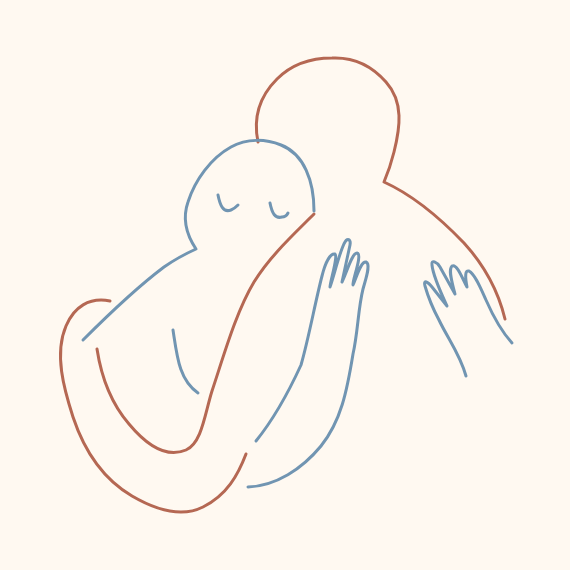

Você não está sozinha.
Um espaço seguro para relatar e encontrar apoio real.
Registre ocorrências de forma totalmente sigilosa, compartilhe vivências sem exposição e localize delegacias especializadas (DEAM) e centros de acolhimento próximos a você.
Sem cadastro. Sem julgamentos. No seu tempo.

Aqui, a sua voz importa.
E a sua história merece cuidado.
Como o SOS WOMAN protege e apoia você
Desenvolvemos uma jornada sem barreiras burocráticas para que você tenha voz e acesso rápido à proteção quando mais precisar.
Relate sem se identificar
Escreva o que aconteceu ou registre um histórico de ocorrências. Não pedimos seu nome, CPF, e-mail ou telefone para criar um relato.
Localize pontos de apoio
Consulte endereços, horários de funcionamento e contatos de Delegacias da Mulher (DEAM), Casas da Mulher Brasileira e CRAS próximos.
Navegue com Saída Rápida
Se alguém se aproximar da sua tela, clique em Saída Rápida no topo da página para ser redirecionada instantaneamente para uma página neutra.
Sua história é sua.
Você escolhe o que compartilhar. Nós priorizamos o seu cuidado.
Seu espaço. Seu tempo. Suas escolhas.
Compartilhe vivências sem exposição, sem pressa e sem precisar se justificar. Aqui, você encontra uma escuta respeitosa para dar o próximo passo.
Existe apoio perto de você.
Encontre lugares preparados para orientar, proteger e acolher você na sua região.
Você decide se quer compartilhar sua localização.
Delegacias da Mulher
DEAM • Atendimento especializado
Casas da Mulher Brasileira
Acolhimento e orientação em um só lugar
Centros de referência
CRAS • Acesso à rede de assistência social
Precisou sair? Tudo bem.
O botão Saída Rápida fica sempre no topo da página e leva você a uma página neutra, sem perguntas.
Importante: a saída rápida não apaga o histórico do navegador.
A gente esclarece. Você fica à vontade.
Informação também é uma forma de cuidado.
Preciso me identificar para fazer um relato?
Não. Você pode relatar sem informar nome, CPF, e-mail ou telefone.
O relato substitui uma denúncia oficial?
Não. O relato no SOS WOMAN não substitui um boletim de ocorrência ou o atendimento dos serviços públicos.
A Saída Rápida apaga meu histórico?
Não. Ela abre uma página neutra, mas não remove o histórico do navegador.
O primeiro passo pode ser no seu tempo.
Você não precisa ter todas as respostas para buscar acolhimento.